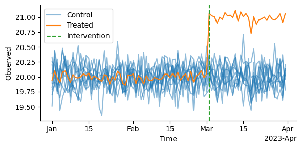

Placebo Testing
A placebo test is an approach to assess the validity of a causal model by checking if the effect can truly be attributed to the treatment, or to other spurious factors. A placebo test is conducted by iterating through the set of control units and at each iteration, replacing the treated unit by one of the control units and measuring the effect. If the model detects a significant effect, then it suggests potential bias or omitted variables in the analysis, indicating that the causal inference is flawed.
A successful placebo test will show no statistically significant results and we may
then conclude that the estimated effect can be attributed to the treatment and not
driven by confounding factors. Conversely, a failed placebo test, which shows
significant results, suggests that the identified treatment effect may not be
reliable. Placebo testing is thus a critical step to ensure the robustness of findings
in RCTs. In this notebook, we demonstrate how a placebo test can be conducted in
causal-validation.
from azcausal.core.error import JackKnife
from azcausal.estimators.panel.did import DID
from azcausal.estimators.panel.sdid import SDID
from causal_validation import (
Config,
simulate,
)
from causal_validation.effects import StaticEffect
from causal_validation.models import AZCausalWrapper
from causal_validation.plotters import plot
from causal_validation.validation.placebo import PlaceboTest
/home/runner/.local/share/hatch/env/virtual/causal-validation/CYBYs5D-/docs/lib/python3.10/site-packages/pandera/engines/pandas_engine.py:67: UserWarning: Using typeguard < 3. Generic types like List[TYPE], Dict[TYPE, TYPE] will only validate the first element in the collection.
warnings.warn(
Data simulation
To demonstrate a placebo test, we must first simulate some data. For the purposes of illustration, we'll simulate a very simple dataset containing 10 control units where each unit has 60 pre-intervention observations, and 30 post-intervention observations.
cfg = Config(
n_control_units=10,
n_pre_intervention_timepoints=60,
n_post_intervention_timepoints=30,
seed=123,
)
TRUE_EFFECT = 0.05
effect = StaticEffect(effect=TRUE_EFFECT)
data = effect(simulate(cfg))
plot(data)
<Axes: xlabel='Time', ylabel='Observed'>

Model
We'll now define our model. To do this, we'll use the synthetic
difference-in-differences implementation of AZCausal. This implementation, along with
any other model from AZCausal, can be neatly wrapped up in our AZCausalWrapper to
make fitting and effect estimation simpler.
model = AZCausalWrapper(model=SDID(), error_estimator=JackKnife())
Placebo Test Results
Now that we have a dataset and model defined, we may conduct our placebo test. With 10 control units, the test will estimate 10 individual effects; 1 per control unit when it is mocked as the treated group. With those 10 effects, the routine will then produce the mean estimated effect, along with the standard deviation across the estimated effect, the effect's standard error, and the p-value that corresponds to the null-hypothesis test that the effect is 0.
In the below, we see that expected estimated effect is small at just 0.08. Accordingly, the p-value attains a value of 0.5, indicating that we have insufficient evidence to reject the null hypothesis and we, therefore, have no evidence to suggest that there is bias within this particular setup.
result = PlaceboTest(model, data).execute()
result.summary()
Output()
| Model | Effect | Standard Deviation | Standard Error | p-value | |-------|--------|--------------------|----------------|---------| | SDID | 0.0851 | 0.4079 | 0.129 | 0.5472 |
Model Comparison
We can also use the results of a placebo test to compare two or more models. Using
causal-validation, this is as simple as supplying a series of models to the placebo
test and comparing their outputs. To demonstrate this, we will compare the previously
used synthetic difference-in-differences model with regular difference-in-differences.
did_model = AZCausalWrapper(model=DID())
PlaceboTest([model, did_model], data).execute().summary()
Output()
| Model | Effect | Standard Deviation | Standard Error | p-value | |-------|--------|--------------------|----------------|---------| | SDID | 0.0851 | 0.4079 | 0.129 | 0.5472 | | DID | 0.0002 | 0.2818 | 0.0891 | 0.9982 |